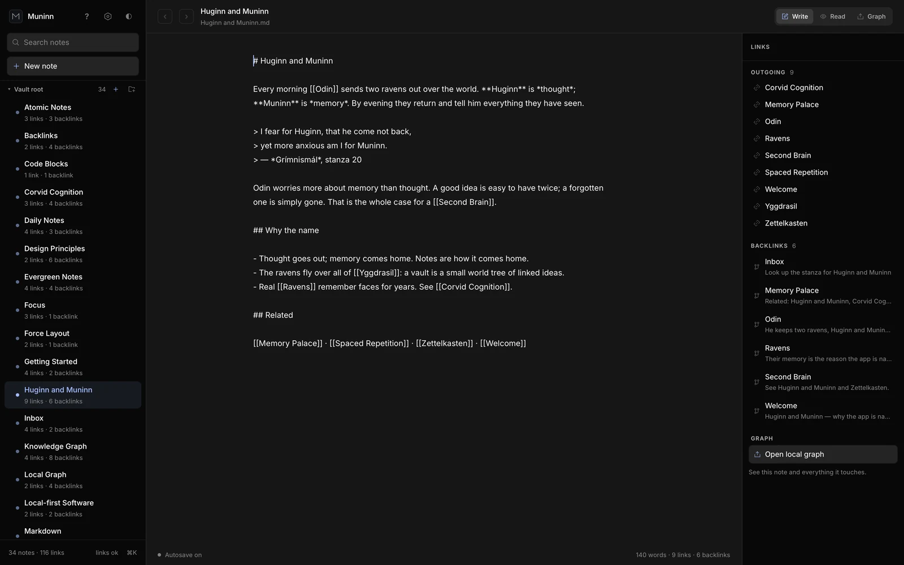
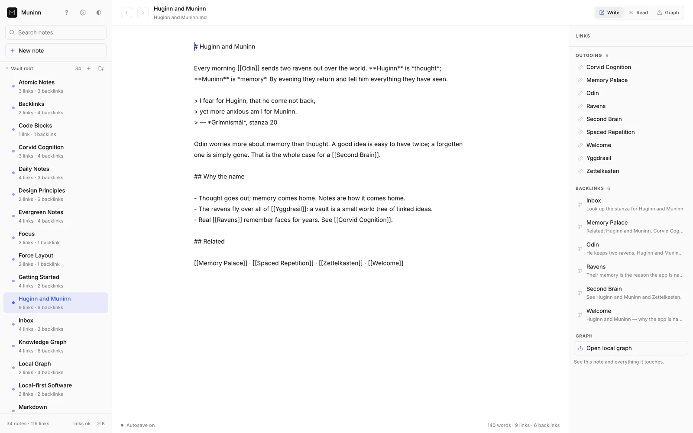
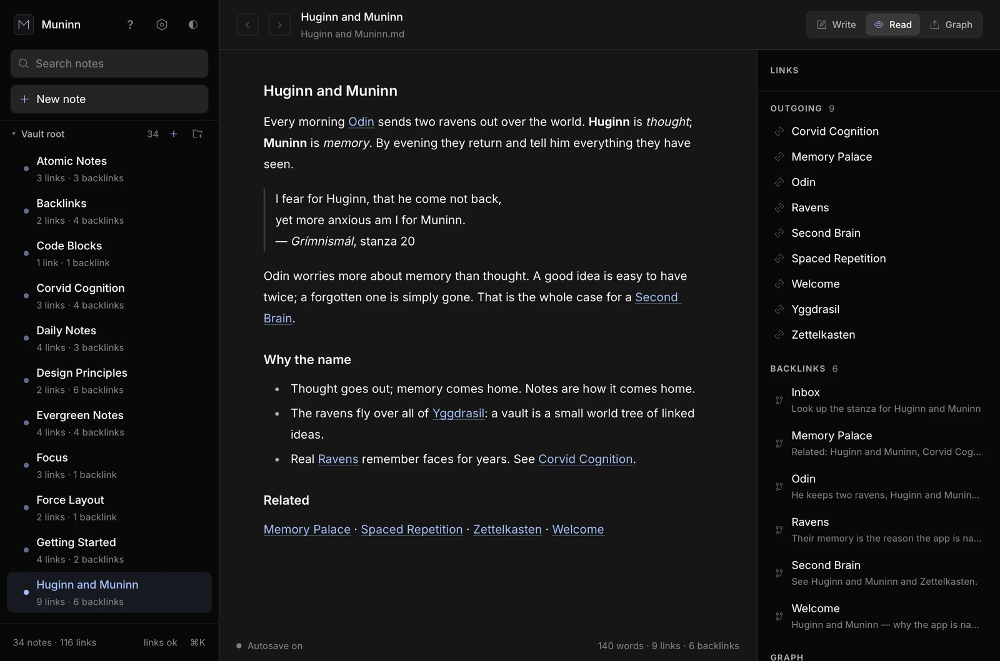
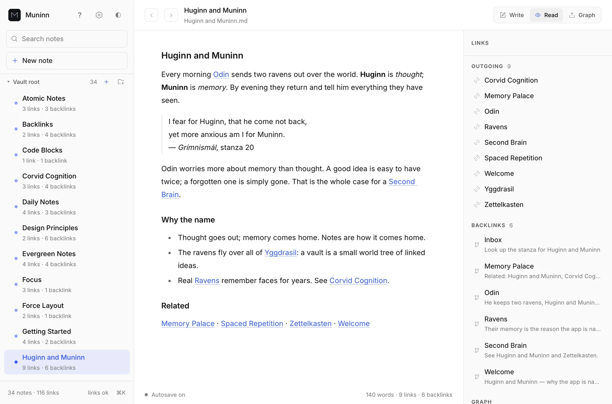
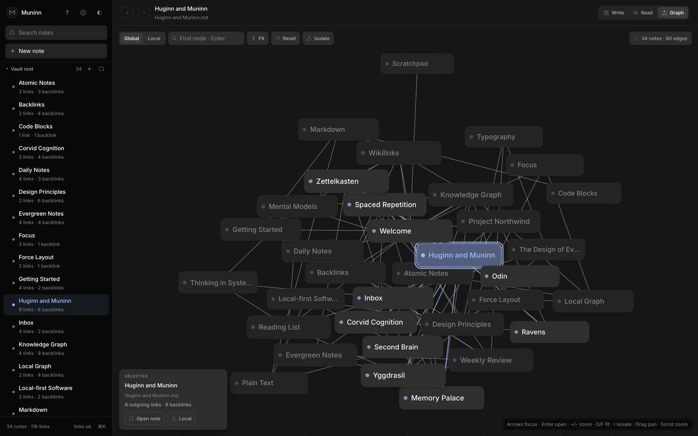
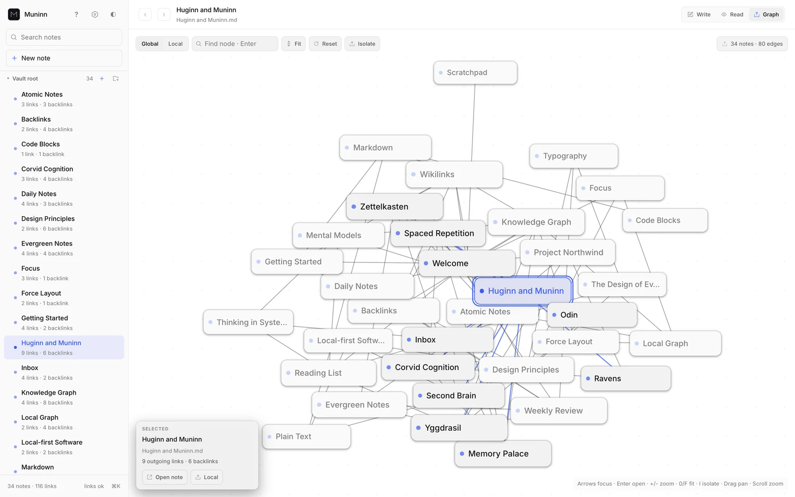
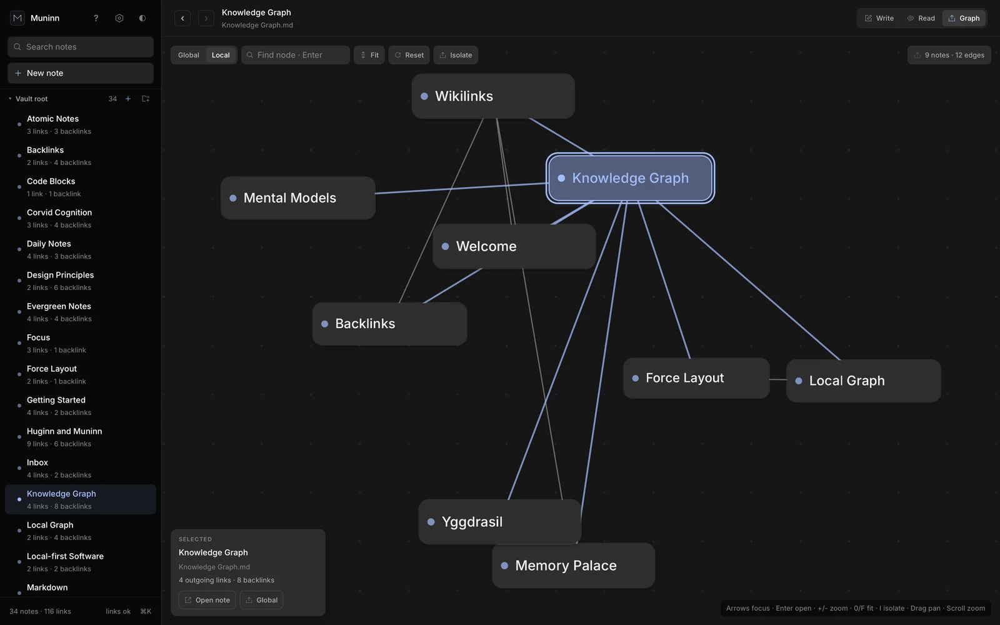
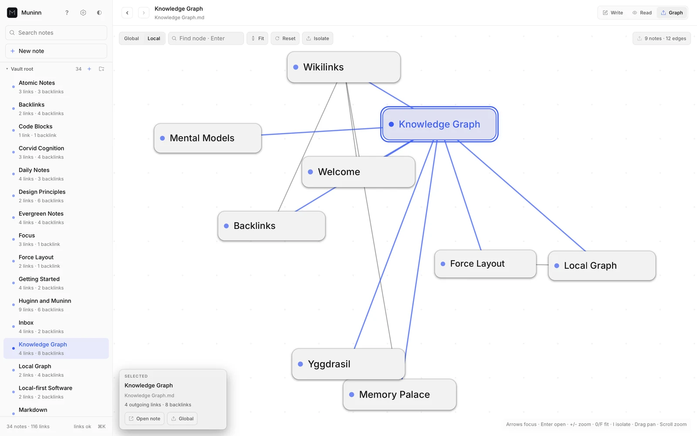

Write in plain Markdown
Write, Read, and Graph are three views of the same file. Links rail on the right: outgoing links, backlinks, and the line that made each one.


Local-first notes
A Markdown vault with [[wikilinks]] and a knowledge graph. Every note is a plain .md file in a folder you choose, so you can read, move, diff, and version-control it with the tools you already use.
Downloads come from the latest GitHub Release: Linux x86_64 (.deb and .tar.gz), macOS on Apple Silicon only (.tar.gz), and Windows x86_64 (.zip). On anything else, build it from source.


Write, Read, and Graph are three views of the same file. Links rail on the right: outgoing links, backlinks, and the line that made each one.


Every [[wikilink]] becomes an edge. Select a node and the camera glides to it; hub notes draw larger.


Local graph keeps the open note and the notes it touches. One click from the links rail, one shortcut from anywhere.


A folder of .md files is the whole vault. Open it in any editor, sync it however you like, keep it in Git.
[[Wikilinks]] that resolve[[Note]], [[Note|alias]], and [[Note#heading]]. Clicking an unresolved link creates the note.
Search with ⌘K, the command palette with ⌘⇧P, and arrow keys through the graph. Ctrl on Linux and Windows.
Off until you connect Google Drive, a GitHub repository, or a device on your Tailscale network. No Muninn account. Privacy
Muninn is free and open source under the MIT license. Builds for Linux, macOS (Apple Silicon), and Windows are on GitHub Releases.
View source on GitHub